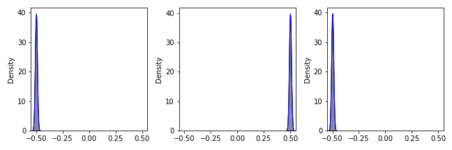

Contributors
하헌진님, 흑염룡님, 머린이왕자님
- CNN에서 batch normalization은 Convolution layer를 따라다닙니다.
- 배치 정규화
batch normalization는 그레이디언트 소실gradient vanishing과 폭주exploding문제를 해결하기 위해 제안되었습니다. - 본 글에서는 배치 정규화의 이론적 내용을 다루지 않습니다.
- tensorflow에 탑재된 keras의
BatchNormalization()이 어떤 결과를 만들어내는지에 집중합니다.
Sergey Ioffe, Christian Szegedy, “Batch Normalization: Accelerating Deep Network Training by Reducing Internal Covariate Shift”, ICML2015
tf.keras.layers.BatchNormalization
1. 예제 데이터 가져오기
- 실제 상황에서는 많은 이미지를 학습시키겠지만, 3장으로 테스트해봅니다.
- 입력 이미지와 히스토그램의 분포 변화를 그려봅니다.
1
2
3
4
5
6
7
8
9
10
11
12%matplotlib inline
import tensorflow as tf
from tensorflow.keras import layers
import numpy as np
import matplotlib.pyplot as plt
import seaborn as sns
img0 = plt.imread("./4-bn_0.jpg")
img1 = plt.imread("./4-bn_1.jpg")
img2 = plt.imread("./4-bn_2.jpg")
- 불러온 이미지를 numpy vector로 만들어 줍니다.
- 하나의 numpy array에 이미지를 모두 탑재합니다.
1
2
3
4
5imgs = np.zeros((3, ) + img0.shape)
imgs[0] = img0/255.0
imgs[1] = img1/255.0
imgs[2] = img2/255.0
print(img0.shape)- 실행결과 : 256 x 256 크기의 3 channel image입니다.
1
(256, 256, 3)
- 실행결과 : 256 x 256 크기의 3 channel image입니다.
- 이미지를 눈으로 확인합니다.
- 앞으로 자주 사용할 기능이니 figure를 리턴하는 함수로 만듭니다.
- 연산을 거친 이미지가 그림으로 출력되기 어려운 범위로 환산될 것을 대비하여 이미지 minmax scaling을 미리 수행합니다.
1
2
3
4
5
6
7
8
9
10
11
12
13
14
15
16
17
18def plot_img(imgs):
# 이미지 minmax scaling
if imgs.min() < 0:
imgs = imgs - imgs.min()
if imgs.max() > 1:
imgs = imgs/imgs.max()
# 시각화
fig, axs = plt.subplots(ncols=len(imgs), figsize=(3*len(imgs), 3))
for img, ax in zip(imgs, axs):
ax.imshow(img)
fig.tight_layout()
return fig
# 데이터 시각화
fig = plot_img(imgs)
2. 데이터 분포 확인하기
- 데이터의 분포를 그림으로 그려서 확인합니다.
- 컬러 이미지이므로 R, G, B 세 개의 채널이 있습니다.
- 세 채널을 각기 빨강, 녹색, 파랑의 밀도함수로 표현합니다.
1
2
3
4
5
6
7
8
9
10
11
12
13
14
15
16
17
18
19
20
21
22
23
24
25
26
27def plot_kde(imgs, symmetry=False):
# 시각화
fig, axs = plt.subplots(ncols=len(imgs), figsize=(3*len(imgs), 3), sharex=True)
for img, ax in zip(imgs, axs):
channel = [0, 1, 2]
color = ["r", "g", "b"]
# R, G, B 채널 분포 시각화.
# 오해가 발생하지 않도록 실제 데이터 범위에만 분포 시각화
[sns.kdeplot(img[:,:,ch].flatten(), color=c, fill=True, ax=ax, cut=0) for ch, c in zip(channel, color)]
# x축 범위 설정.
# 필요시 x축을 0 중심으로 대칭이 되도록 설정할 수 있도록.
xlim = ax.get_xlim()
if symmetry==True:
xlim = [-max(abs(xlim)), max(abs(xlim))]
axs[0].set_xlim(xlim)
fig.tight_layout()
# 나중에 분포를 겹쳐 그리기 위해 fig 외에도 axes를 함께 리턴합니다.
return fig, axs
# 데이터 분포 시각화
fig, axs = plot_kde(imgs)
3. Batch Normalization 적용 (1) 직접
- 앞선 글에서 Conv2D만 따로 적용했습니다.
- 이번에도 학습과정 없이
BatchNormalization()만 적용해 보겠습니다.1
2
3
4
5
6imgs_tensor = tf.convert_to_tensor(imgs, dtype="float32")
bn0 = layers.BatchNormalization(trainable=True)(imgs_tensor)
bn0_numpy = bn0.numpy()
fig1 = plot_img(bn0_numpy)
fig2, _ = plot_kde(bn0_numpy)
- 바뀐 것이 없습니다.
- Batch Normalization은 Conv2D와 달리 학습 과정에서 데이터의 분포를 파악하여 적용하도록 설계되어 있기 때문에 이런 방식으로는 작동하지 않습니다.
4. Batch Normalization 적용 (2) 학습
- 학습을 위한 최소한의 모델을 만듭니다.
- BatchNormalization 레이어 외에는 아무것도 없습니다.
1
2
3
4
5
6from tensorflow.keras.models import Sequential
model = Sequential([
layers.BatchNormalization()
])
model.compile()
- 모델에 데이터를 투입하여 학습을 시킵니다.
- 이 때, numpy array를 텐서로 변환하여 입력해야 합니다.
1
bn1 = model(imgs_tensor, training=True)
- 잘 적용되었을까요? 확인합시다.
- 다시 numpy array로 바꾸어서 이미지와 분포를 그려봅니다.
1
2
3
4bn1_numpy = bn1.numpy()
fig1 = plot_img(bn1_numpy)
fig2, _ = plot_kde(bn1_numpy)
Batch Normalization 이전과 이후를 나란히 놓아봅시다.
원본에 비해 색이 흐려진 것이 느껴집니다.
이미지는 데이터를 그림으로 표현하기 위해 minmax scaling이 된 것입니다.
- 실제 데이터의 분포는 아래에 있는 밀도함수를 통해 알 수 있습니다.
- 원본에서 0
1 사이에 있던 값의 분포가 -22 사이로 변환되었습니다. - RGB 채널이 각기 독립적으로 normalization 되었습니다.
※ CNN에서 Batch Normalization은 대개 Convolution layer와 activation layer 사이에 위치합니다
- Convolution을 거친 이미지는 Batch Normalization에 의해 고르게 분포됩니다.
- 잘못된 초기화로 인해 학습이 어려워지는 문제를 해결할 수 있습니다.
- 결과적으로 학습이 안정적으로 빠르게 이루어집니다.
※(추가) 위 그림이 BN효과를 오해할 소지가 있다고 생각되어 수정했습니다.
- 자세한 고민은 다음 글을 읽어보세요: Visualization of Image Exceeding Limitation
- 기록 차원에서 본 글의 미리보기는 수정하지 않았습니다.

4. 보너스 - toy model
- Batch Normalization은 데이터의 평균을 0, 분산을 1로 조정합니다.
- 간단한 예제 데이터를 통해서 정말 그런지 살펴봅니다.
- numpy array 형태의 예제 데이터를 만듭니다.
1
2
3
4
5
6
7
8
9
10
11
12
13
14# 예제 데이터 생성
ex_img0 = np.random.normal(loc=-0.5, scale=0.01, size=256*256*3).reshape((256, 256, 3))
ex_img1 = np.random.normal(loc=0.5, scale=0.01, size=256*256*3).reshape((256, 256, 3))
ex_img2 = np.random.normal(loc=-0.5, scale=0.01, size=256*256*3).reshape((256, 256, 3))
# 예제 데이터 vectorization
ex_imgs = np.zeros((3, ) + ex_img0.shape)
ex_imgs[0] = ex_img0
ex_imgs[1] = ex_img1
ex_imgs[2] = ex_img2
# 데이터 시각화
fig1 = plot_img(ex_imgs)
fig2, _ = plot_kde(ex_imgs)

- 평균이 각기 -0.5, 0.5, -0.5이고 표준편차가 0.01인 데이터가 만들어졌습니다.
1
print(ex_img0.var())
- 실행결과 : 분산이 0.0001, 즉 표준편차는 0.01 맞습니다.
1
0.00010004582097558264
- 실행결과 : 분산이 0.0001, 즉 표준편차는 0.01 맞습니다.
- Batch Normalization을 적용합니다.
- 데이터를 텐서로 만들어 적용하고, 시각화를 위해 다시 numpy로 변환합니다.
1
2
3ex_imgs_tensor = tf.convert_to_tensor(ex_imgs, dtype="float32")
ex_bn1 = model(ex_imgs_tensor, training=True)
ex_bn1_numpy = ex_bn1.numpy()
- 변환 결과를 그림으로 확인합니다.
1
2
3
4
5
6
7
8
9
10
11
12
13
14from matplotlib import patches
fig1 = plot_img(ex_bn1_numpy)
fig2, axs = plot_kde(ex_bn1_numpy, symmetry=True)
for ax, ex_img in zip(axs, ex_imgs):
sns.kdeplot(ex_img.flatten(), ax=ax, color="gray")
Rectangle0 = patches.Rectangle((0.45, 0.9), 0.12, 0.05, color="lightgray", transform=axs[0].transAxes)
axs[0].add_patch(Rectangle0)
axs[0].text(0.6, 0.9, "before BN", fontdict={"fontsize":12, "color":"k"}, transform=axs[0].transAxes)
Rectangle1 = patches.Rectangle((0.45, 0.8), 0.12, 0.05, color="navy", transform=axs[0].transAxes)
axs[0].add_patch(Rectangle1)
axs[0].text(0.6, 0.8, "after BN", fontdict={"fontsize":12, "color":"k"}, transform=axs[0].transAxes)
- 그림으로 봐서는 모르겠습니다. minmax scaling이 적용되었기 때문입니다.
- 그러나 분포를 보면, -0.5와 0.5에 분포했던 데이터가 각기 -1과 1 방향으로 이동한 것을 알 수 있습니다.
- 정확한 값을 추측해봅시다.
- -0.5, 0.5, -0.5의 평균은 $$\frac{-1}{6}$$, 표준편차는 $$\frac{\sqrt{2}}{3}$$입니다.
- 따라서 -0.5, 0.5, -0.5의 Batch Normalization 결과는 $$\frac{-1}{\sqrt{2}}, \frac{2}{\sqrt{2}}, \frac{-1}{\sqrt{2}}$$가 될 것입니다.
- 정말 그런지 확인해봅시다.
- 평균값을 확인합니다.
1
print([ex_bn1_numpy[i].mean() for i in range(3)])
- 실행결과 : $$\frac{-1}{\sqrt{2}}, \frac{2}{\sqrt{2}}, \frac{-1}{\sqrt{2}}$$입니다.
1
[-0.7053814, 1.4107242, -0.70534563]
- 실행결과 : $$\frac{-1}{\sqrt{2}}, \frac{2}{\sqrt{2}}, \frac{-1}{\sqrt{2}}$$입니다.
- mini-batch의 평균과 variance를 구합니다.
- model의 layer에 데이터가 저장되어 있습니다.
1
2
3
4
5mean = model.layers[0].variables[2].numpy()
var = model.layers[0].variables[3].numpy()
print(mean, mean.mean())
print(var, var.mean())- 실행결과 : 0에 가까운 평균과 1에 가까운 분산이 출력되었습니다.
1
2[0.00435958 0.00288465 0.00303697] 0.0034270668
[0.9828158 0.983015 0.9831719] 0.98300093
- 실행결과 : 0에 가까운 평균과 1에 가까운 분산이 출력되었습니다.